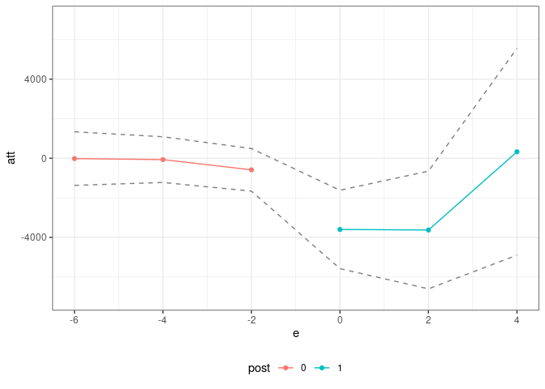

The ife package contains code to estimate treatment effects in a setup where a researcher has access to panel data (or, hopefully in the near future, repeated cross sections data) and where untreated potential outcomes are generated by an interactive fixed effects model.
The package is not currently available on CRAN, but the development version of the package can be installed from github by
# install.packages("devtools")
devtools::install_github("bcallaway11/ife")Example
Next, we provide a brief example using the application from Callaway and Karami (2021).
res <- ife(yname="earn",
gname="first.displaced",
tname="year",
idname="id",
data=job_displacement_data,
nife=1,
xformla=~EDUC + race + gender,
zformla=~EDUC + race + gender + afqt,
ret_ife_regs=TRUE,
anticipation=1,
cband=FALSE,
alp=0.10,
boot_type="multiplier",
biters=1000,
cl=10)
summary(res)
#>
#> Overall ATT:
#> ATT Std. Error [ 90% Conf. Int.]
#> -3976.881 1131.198 -5837.537 -2116.225 *
#>
#>
#> Dynamic Effects:
#> Event Time Estimate Std. Error [90% Conf. Band]
#> -6 -15.0413 851.3006 -1415.306 1385.2235
#> -4 -131.3128 688.5025 -1263.799 1001.1730
#> -2 -664.5203 633.7427 -1706.934 377.8937
#> 0 -3946.5861 1044.2221 -5664.179 -2228.9936 *
#> 2 -4281.1615 1554.6782 -6838.380 -1723.9434 *
#> 4 -1454.0791 2663.9072 -5835.817 2927.6584
#> ---
#> Signif. codes: `*' confidence band does not cover 0
ggpte(res) + ylim(c(-7000,7000))
We also have some code for running individual-specific linear trends models. These are a special case of the interactive fixed effects models that we consider in the paper, but where the factors Ft are restricted to be equal to t. We mostly argue against these sorts of models in the paper, but one advantage is that they do not require any restrictions/assumptions about finding a covariate whose effects do not change over time.
This code also implements a version of linear trends that is specific to untreated potential outcomes. Presumably, many of the same criticisms (and perhaps more actually) in recent papers about implementing DID with a two-way fixed effects regression likely apply when one includes individual-specific linear trends in the same sort of specification. The code we provide here circumvents those issues.
lt_res <- linear_trends(yname="earn",
gname="first.displaced",
tname="year",
idname="id",
data=job_displacement_data,
xformla=~EDUC + race + gender,
anticipation=1,
cband=FALSE,
alp=0.10,
boot_type="multiplier",
biters=1000,
cl=10)
summary(lt_res)
#>
#> Overall ATT:
#> ATT Std. Error [ 90% Conf. Int.]
#> -3463.467 1273.276 -5557.82 -1369.113 *
#>
#>
#> Dynamic Effects:
#> Event Time Estimate Std. Error [90% Conf. Band]
#> -6 -17.6954 791.4771 -1319.559 1284.1686
#> -4 -69.4965 734.1094 -1276.999 1138.0060
#> -2 -586.0360 668.7988 -1686.112 514.0401
#> 0 -3599.9237 1171.4060 -5526.715 -1673.1322 *
#> 2 -3628.0465 1733.9698 -6480.173 -775.9201 *
#> 4 326.6318 3058.3245 -4703.864 5357.1279
#> ---
#> Signif. codes: `*' confidence band does not cover 0
ggpte(lt_res) + ylim(c(-7000,7000))